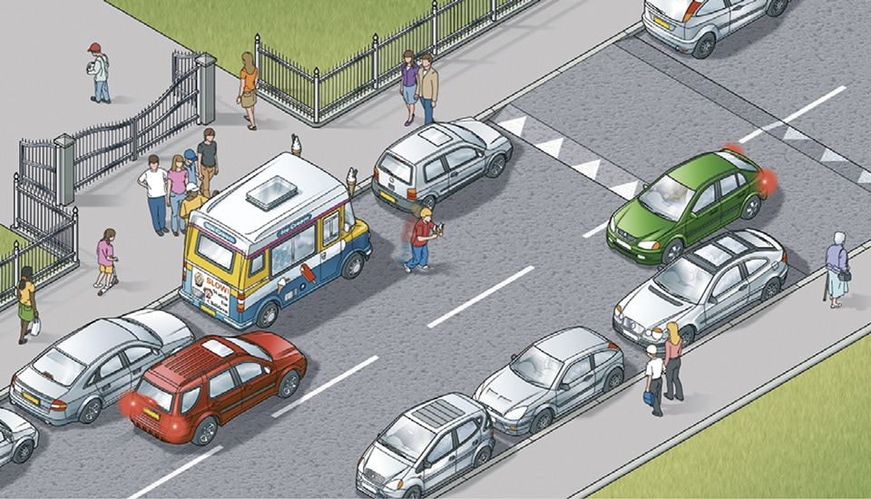

Road users requiring extra care (204 to 225)
|
2. Pedestrians (205 to 210)
205
There is a risk of pedestrians, especially children, stepping unexpectedly into the road. You should drive with the safety of children in mind at a speed suitable for the conditions.
206
Drive carefully and slowly when
There is a risk of pedestrians, especially children, stepping unexpectedly into the road. You should drive with the safety of children in mind at a speed suitable for the conditions.
206
Drive carefully and slowly when
- in crowded shopping streets, Home Zones and Quiet Lanes (see Rule 218) or residential areas
- driving past bus and tram stops; pedestrians may emerge suddenly into the road
- passing parked vehicles, especially ice cream vans; children are more interested in ice cream than traffic and may run into the road unexpectedly
- needing to cross a pavement, cycle lane or cycle track; for example, to reach or leave a driveway or private access. Give way to pedestrians on the pavement and cyclists using a cycle lane or cycle track
- reversing into a side road; look all around the vehicle and give way to any pedestrians who may be crossing the road
- turning at road junctions; you should give way to pedestrians who are crossing or waiting to cross the road into which or from which you are turning
- going through road works or when passing roadside rescue and recovery vehicles, as there may be people working in or at the side of the road
- the pavement is closed due to street repairs and pedestrians are directed to use the road
- approaching pedestrians on narrow rural roads without a footway or footpath. Always slow down and be prepared to stop if necessary, giving them plenty of room as you drive past
- approaching zebra and parallel crossings as you MUST give way to pedestrians and cyclists on the crossing (see Rule 195)
- approaching pedestrians who have started to cross the road ahead of you. They have priority when crossing at a junction or side road so you should give way (see Rule H2).

Rule 206: Watch out for children in busy areas
207
Particularly vulnerable pedestrians. These include:
Near schools. Drive slowly and be particularly aware of young cyclists and pedestrians. In some places, there may be a flashing amber signal below the ‘School’ warning sign which tells you that there may be children crossing the road ahead. Drive very slowly until you are clear of the area.
209
Drive carefully and slowly when passing a stationary bus showing a ‘School Bus’ sign as children may be getting on or off.
Particularly vulnerable pedestrians. These include:
- children and older pedestrians who may not be able to judge your speed and could step into the road in front of you. At 40 mph (64 km/h) your vehicle will probably kill any pedestrians it hits. At 20 mph (32 km/h) there is only a 1 in 20 chance of the pedestrian being killed. So kill your speed
- older pedestrians who may need more time to cross the road. Be patient and allow them to cross in their own time. Do not hurry them by revving your engine or edging forward
- people with disabilities. People with hearing impairments may not be aware of your vehicle approaching. Those with walking difficulties require more time
- blind or partially sighted people, who may be carrying a white cane using a guide dog. They may not be able to see you approaching
- deafblind people who may be carrying a white cane with a red band or using a dog with a red and white harness. They may not see or hear instructions or signals.
Near schools. Drive slowly and be particularly aware of young cyclists and pedestrians. In some places, there may be a flashing amber signal below the ‘School’ warning sign which tells you that there may be children crossing the road ahead. Drive very slowly until you are clear of the area.
209
Drive carefully and slowly when passing a stationary bus showing a ‘School Bus’ sign as children may be getting on or off.

School bus (displayed in front or rear window of bus or coach)
210
You MUST stop when a school crossing patrol shows a ‘Stop for children’ sign (download ‘Signals by authorised persons’) and
‘Traffic signs’).
Law RTRA sect 28